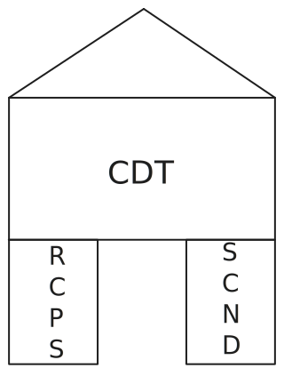

graph LR
A[0] -->|"$$c_{0,1}$$"| B("$$J_1$$")
B -->|"$$c_{1,2}$$"| C("$$J_2$$")
C -->|"$$c_{2,3}$$"| D("$$J_3$$")
C -->|"$$c_{2,4}$$"| E("$$J_4$$")
D -->|"$$c_{3,5}$$"| F[5]
E -->|"$$c_{4,5}$$"| F
Theory
There are two ways to view the the Continuum Digital Twin1:
1 CDT
- Job-centered view.
- Facility- or Machine-centered view.
The first is best modelled by a scheduling approach. The second is principally a supply chain model.
We propose a hierarchical model for the CDT, composed of a Supply Chain Network Design2 coupled with a Resource Constrained Process Scheduling3. In such a hierarchical system, the supply chain model allocates jobs to the best facilities, and the scheduling model then (optimally) sequences jobs within a given facility. Supply chain optimization emphasizes “where” (facility location, data transfer mode, sourcing). Scheduling emphasizes “when” and “in what order.”
2 SCND
3 RCPSP
Recall the basic problem: given a directed graph of \(N\) storage and processing jobs \(\mathscr{J},\) find an optimal allocation \(A\) and a feasible schedule \(S.\) Further details below.
\(\mathscr{J}=\{ J_1, J_2, \ldots J_N\},\)
Supply Chains and Scheduling
Let us begin by defining supply chains and scheduling in the context of the CDT.
Definition 1 (Supply Chain) A supply chain is a network (directed graph) of jobs, facilities, data storage, networks, processing and end-product delivery to users. The design poroblem is to optimally allocate an ordered list of data storage and data processing jobs to an optimal choice of storage and processing centres.
Definition 2 (Scheduling) Scheduling is a decision-making process that deals with the allocation of (limited) resources to tasks over given time periods. Its goal is to optimize one or more objectives. The resulting schedule is a job sequence determined for every machine (facility) of the processing system.
These two models are complementary:
- the SCND can be used for global, over a fixed period, modelling—for example over an entire project duration, or annualized;
- the RCPSP can be used for time-dependent models, especially when uncertainty is introduced, as in a two-stage, or multi-stage, model—see below Section Uncertainty.
In Figure 1 and Figure 2 below, we show two alternative viewpoints of a simple 4-job, 4-machine scheduling problem. The global mathematical formulation will effectively include and combine these two viewpoints, as depicted in Figure 3 and formulated below.
flowchart LR
A[(DC1)]:::otherclass --> C{{HPC1}}:::thirdclass
B[(DC2)]:::otherclass
A --> D{{HPC2}}:::thirdclass
%%A[(data1)]:::someclass --> E{{HPC3}}:::thirdclass
C --> F[(DC1)]:::otherclass
C --> G[(DC2)]:::otherclass
F --> H{{HPC1}}:::thirdclass
F --> I{{HPC2}}:::thirdclass
classDef someclass stroke:#f00
classDef otherclass stroke:#0f0
classDef thirdclass stroke:#00f

Supply Chain Network Design
Problem Definition
Let \(\mathscr{J},\) \(\mathscr{F},\) and \(\mathscr{U}\) be respective (finite) sets of jobs and datasets, HPC and datacentres (facilities), and end-users. The union \[\mathscr{N} \doteq \mathscr{J} \cup \mathscr{F} \cup \mathscr{U}\] of these sets is viewed as the set of nodes of a directed graph \((\mathscr{N},\mathscr{A}),\) where \(\mathscr{A}\) is a set of arcs (directed links) connecting these nodes in a way representing flow of the jobs—see Figure 1 and Figure 2. The processing facilities \(\mathscr{F}\) can include HPC centres \(\mathscr{H},\) data storage centres \(\mathscr{D},\) and post-processing centres \(\mathscr{P},\) i.e. \(\mathscr{F}=\mathscr{H}\cup\mathscr{D}\cup\mathscr{P}.\) Furthermore, HPC (\(i\in\mathscr{H}\)), data (\(i\in\mathscr{D}\)), and post-processing (\(i\in\mathscr{P}\)) centers can each be composed of sets of individual machines, \(\mathscr{M}_{i}\) and the set \(\mathscr{F}\) includes the processing centers as well as the machines in each center. Finally, let \(\mathscr{K}\) be the set of jobs flowing through the ``supply chain,’’ the digital continuum in our case.
State Variables
The state of the system, or supply chain, at a given time \(t,\) is represented by state variables and coefficients:
- the available (open/used, or closed/unused) facilities:
- compute centres \(x^{C}_{i}\in\left\{ 0,1\right\} ,\) \(i=1,\ldots,N_{C}\)
- data centres \(x^{D}_{j}\in\left\{ 0,1\right\} ,\) \(j=1,\ldots,N_{D}\)
- the quantity/number of jobs, or datasets, or volumes transferred
- \(y_{ji}\) from instrument (data centre) \(j\) to compute centre \(i,\)
- \(y_{ij}\) from compute centre \(i\) to data centre \(j,\)
- \(y_{ik}\) from compute centre \(i\) to user \(k,\)
- \(y_{kj}\) from user \(k\) to data centre \(j,\)
- costs—both fixed and variable (eventually stochastic4)—are associated with each of the decision variables;
- resource supply/availability and demand/requests are specified for each facility, and eventually for each machine in a given facility—this can includes the ephemeral buffers (Garénaux-Gruau, Bodin, and Asch 2025).
4 Either a discrete set or tabulated values drawn from a known probability distribution, or the PDF itself.
Objective Function
The overall objective is to combine location decisions—which centres to use—with allocation decisions—how to distribute the workloads and jobs among the chosen centres (data and compute).
There can be a single objective such as minimizing (any function of) the total of fixed and variable costs, or minimizing the completion time (makespan). Multiple objective optimization5 seeks a tradeoff between minimum cost and maximum sustainability (minimum environmental impact). Finally, stochastic optimization takes into account the uncertainties of resource availabilities and delays, maintenance and failures, resource allocations, variable energy costs, project costs (HR, budget).
5 MOO
The overall, deterministic cost function for total cost can be expressed as a sum (some terms can be ignored by setting the coefficients to zero, depending on the context) \[\begin{gather*} \min_{x,y}\sum^{N_{C}}_{i=1}f^{C}_{i}x^{C}_{i}+\sum^{N_{D}}_{j=1}f^{D}_{j}x^{D}_{j}+\sum^{N_{C}}_{i=1}\sum^{N_{D}}_{j=1}c_{ji}y_{ji}+\\ \sum^{N_{D}}_{j=1}\sum^{N_{C}}_{i=1}c_{ij}y_{ij}+\sum^{N_{C}}_{i=1}\sum^{N_{U}}_{k=1}c_{ik}y_{ik}+\sum^{N_{U}}_{k=1}\sum^{N_{D}}_{j=1}c_{kj}y_{kj} \end{gather*}\]
- \(f^{C}_{i},\) \(f^{D}_{j}\) are the fixed costs of using compute centre \(i,\) data centre \(j;\)
- \(c_{ji},\) \(c_{ij},\) \(c_{ik},\) \(c_{kj}\) are the variable costs of the job “flow” from data centre \(j\) to compute centre \(i,\) etc. along the arc \((j,i)\in\mathscr{A}\), etc.
- \(y_{ji},\) \(y_{ij},\) \(y_{ik},\) \(y_{kj}\) are the corresponding quantities “flowing” from data centre \(j\) to compute centre \(i,\) etc. along the arc \((j,i)\in\mathscr{A}\), etc.
- \(x_{i},\) \(x_{j}\) are binary variables, indicating the choice/use of a particular compute or data centre;
- \(N_U\) is the number of end-users;
- weights, or priorities, can be attributed to each term, to either balance the contributions, or to give greater importance to certain terms.
NOTE:
- This formulation can be considerably simplified by grouping all transfer costs, and summing over the union of facilities/machines available.
- Rather express all this as a multi-mode RCPSP based on a DAG, as follows:
The resource-constrained project scheduling problem is a classical well-known problem in operations research. A number of activities are to be scheduled. Each activity has a duration and cannot be interrupted. There are a set of precedence relations between pairs of activities which state that the second activity must start after the first has finished. The set of precedence relations are usually given as a directed acyclic graph (DAG), where the edge \((u,v)\) represents a precedence relation where \(u\) must finish before \(v\) begins. The DAG contains two additional activities with duration 0, the source and sink, where the source is the first activity and sink is the last activity (these are dummy activities).
There are a set of renewable resources. Each resource has a maximum capacity and at any given time slot no more than this amount can be in use. Each activity has a demand (possibly zero) on each resource. The dummy source and sink activities have zero demand on all resources.
The problem is usually stated as an optimisation problem where the makespan (i.e. the completion time of the sink activity) is minimised.
Multi-mode Variant An extension of the basic RCPSP is the multi-mode variant where activities may have multiple modes. The mode dictates the duration and resource demands of the activity. In this variant, the schedule must give the mode of each activity as well as its starting time.
Non-Renewable Resources Another extension concerns non-renewable resources. Each non-renewable resource has a capacity for the entire schedule. An example would be a financial budget that applies to the entire project. Modes of activities must be chosen to avoid exceeding the capacity of each of the non-renewable resources.
Configuration Decisions
We suppose that supply chain configuration decisions consist of deciding which of the processing centers to engage, and eventually which processing and storage machines to use within each center.
Dynamic Networks
We can generalize the supply chain by considering a multi-stage network with an added time dimension. This enables flow and carrying of data and jobs across time periods, in addition to flow among facilities. For example, if certain facilites become unavailable, or less available, as the project evolves over time. This is a kind of recourse, which will be considered below in Section Uncertainty.
flowchart LR
subgraph t1["t = 1"]
direction LR
a1((" "))-->a2((" "))
a1-->a3((" "))
a2-->a4((" "))
a2-.->a5((" "))
end
subgraph t2["t = 2"]
direction LR
b1((" "))-->b2((" "))
b1-->b3((" "))
b2-.->b4((" "))
b2-->b5((" "))
end
t1 --> t2
style t1 fill: white
style t2 fill: white
Mathematical Formulation - Deterministic Model
We begin with a deterministic formulation, and then introduce uncertainties to obtain a full stochastic model.
Assign a binary variable \(x_{i}=1\) if the processing facility \(i\) is engaged or machine \(i\) is used, and \(x_{i}=0\) otherwise. Operational decisions then consist of routing the flow of all the jobs \(k\in\mathscr{K}\) from the instrument—or primary data reposirory—to the end-user, in a cost-optimal way, still to be defined.
Let \(y^{k}_{ij}\) denote the flow of job \(k\) from a node \(i\) to a node \(j\) of the network, where \((i,j)\in\mathscr{A}\) is an arc of the network. The flow will normally be a voluminous data transfer, possibly by even physically tansporting disk drives from remote locations.
The optimization problem—objective function and constraints—can be written as follows. It covers a very general case, with both optimal allocation and eventual resource constraints.
\[\begin{align} \min_{x,y} & \sum_{i\in\mathscr{F}}c_{i}x_{i}+\sum_{k\in\mathscr{K}}\sum_{(i,j)\in\mathscr{A}}q^{k}_{ij}y^{k}_{ij} \tag{1}\label{eq:sc1}\\ \textrm{s.t.} & \sum_{i\in\mathscr{N}}y^{k}_{ij}-\sum_{\ell\in\mathscr{N}}y^{k}_{j\ell}=0,\quad j\in\mathscr{F},\;k\in\mathscr{K}, \tag{2}\label{eq:sc2}\\ & \sum_{i\in\mathscr{N}}y^{k}_{ij}\ge d^{k}_{j},\quad j\in\mathscr{U},\;k\in\mathscr{K}, \tag{3}\label{eq:sc3}\\ & \sum_{i\in\mathscr{N}}y^{k}_{ij}\le s^{k}_{j},\quad j\in\mathscr{I},\;k\in\mathscr{K}, \tag{4}\label{eq:sc4}\\ & \sum_{k\in\mathscr{K}}r^{k}_{j}\sum_{i\in\mathscr{N}}y^{k}_{ij}\le m_{j}x_{j},\quad j\in\mathscr{F}, \tag{5}\label{eq:sc5}\\ & x\in\mathscr{X},\quad y\ge0, \tag{6}\label{eq:sc6} \end{align}\]
- in \(\eqref{eq:sc1}\), \(c_{i}\) is the cost of engaging facility \(i\) or using machine \(i,\) and \(q^{k}_{ij}\) is the per unit cost of processing job \(k\) at facility \(i\) and/or sending job \(k\) on arc \((i,j)\in\mathscr{A},\) (data transfer, transport and data storage costs)
- in \(\eqref{eq:sc3}\), \(d^{k}_{j}\) is the “demand” of job \(k\) at node \(j,\) (eg. how many CPU’s or how much data storage capacity is required)
- in \(\eqref{eq:sc4}\), \(s^{k}_{j}\) is the “supply” of job \(k\) at node \(j,\) (eg. how many CPU’s or how much data storage capacity is available)
- in \(\eqref{eq:sc5}\), \(r^{k}_{j}\) is the per-unit processing requirement for job \(k\) at node \(j,\) and \(m_{j}\) is the capacity of facility \(j,\)
- in \(\eqref{eq:sc6}\), \(\mathscr{X}\subset\left\{ 0,1\right\} ^{\left|\mathscr{F}\right|},\) \(y\in\mathbb{R}^{\left|\mathscr{A}\right|\times\left|\mathscr{K}\right|}\) is a vector with components \(y^{k}_{ij},\)
- all cost components are defined per given period (hour, day, week, month, etc.)
The above equations have the following interpretations.
- Objective function (\(\ref{eq:sc1}\)) minimizes the total of investment6 plus operational7 costs.
- \(\mathscr{K}\) represents logical dependencies and restrictions, such as \(x_{i}\le x_{j}\) for all \(i\in\mathscr{M}_{j},\) where \(j\in\left\{ \mathscr{H},\mathscr{D},\mathscr{P}\right\} ,\) which means that machine \(i\) should be used only if facility \(j\) is engaged, and since the \(x\)’s are binary the constraint \(x_{i}\le x_{j}\) implies that \(x_{i}=0\) if \(x_{j}=0.\)
- Constraints (\(\ref{eq:sc2}\)) enforce the flow conservation of job \(k\) across each processing node \(j.\)
- Constraints (\(\ref{eq:sc3}\)) require that the total flow of job \(k\) to a customer node \(j\) should exceed the “demand” \(d^{k}_{j}\) at that node.
- Constraints (\(\ref{eq:sc4}\)) require that the total flow of job \(k\) from an instrument node \(j\) should be less than the “supply” \(s^{k}_{j}\) at that node.
- Constraints (\(\ref{eq:sc5}\)) enforce capacity constraints of the processing nodes.
- Require that the total processing requirement of all jobs flowing into a processing node \(j\) should be smaller than the capacity \(m_{j}\) of facility\(j\) if it is used (\(x_{j}=1\)).
- If facility \(j\) is not used (\(x_{j}=0\)), the constraint will force all flow variables \(y^{k}_{ij}=0\) for all \(i\in\mathscr{N}.\)
- Finally, constraint (\(\ref{eq:sc6}\)) enforces the feasibility constraint \(x\in\mathscr{X}\) and the non-negativity of the flow variables corresponding to an arc \((i,j)\in\mathscr{A},\) and job \(k\in\mathscr{K}.\)
6 CAPEX
7 OPEX
We can rewrite the above in a very compact, matrix-vector form.
\[\begin{align*} \min & \,\,c^{\top}x+q^{\top}y\\ \textrm{s.t.} & \,\,Ny=0,\\ & Cy\ge d,\\ & Sy\le s,\\ & Ry\le Mx, \end{align*}\] where
- vectors \(c,\) \(q,\) \(d,\) and \(s\) represent fixed costs, processing or transmission costs, demands, supplies, respectively;
- matrices \(N,\) \(C,\) and \(S\) correspond to summations of the respective expressions, (nodes, demands, supplies);
- \(R\) is the matrix of \(r^{k}_{j}\) (requirements);
- \(M=\textrm{ diag }(m_{j})\) (machine capacities).
Simplified Cases
The above formulation covers both the cost-optimal streaming of jobs across the cyberinfrastructure as well as the respect of individual facilities’ constraints. The latter is a resource-constrained scheduling problem.
Unconstrained-Resource Problem
As a first simplification, we suppose that the facilites possess the necessary capacities to service the requirements of all the incoming data storage and processing jobs. Suppose that we still have fixed and variable costs, so the objective does not change. The “infinite-resource” problem simplifies to:
\[\begin{align} \min_{x,y} & \sum_{i\in\mathscr{F}}c_{i}x_{i}+\sum_{k\in\mathscr{K}}\sum_{(i,j)\in\mathscr{A}}q^{k}_{ij}y^{k}_{ij} \tag{1a}\label{eq:sc1a}\\ \textrm{s.t.} & \sum_{i\in\mathscr{N}}y^{k}_{ij}-\sum_{\ell\in\mathscr{N}}y^{k}_{j\ell}=0,\quad j\in\mathscr{F},\;k\in\mathscr{K}, \tag{2a}\label{eq:sc2a}\\ & x\in\mathscr{X},\quad y\ge0, \tag{6a}\label{eq:sc6a} \end{align}\]
Resource-Constrained Project Scheduling Problem (RCPSP)
A second simplification is to consider the resource constraint problem, without facility or machine allocations. The Resource-Constrained Project Scheduling Problem (RCPSP) is a combinatorial optimization problem that consists of finding a feasible scheduling for a set of \(n\) jobs subject to resource and precedence constraints. Each job has a processing time, a set of successor jobs and a required amount of different resources. Resources may be scarce but are renewable at each time period. Precedence constraints between jobs mean that no jobs may start before all its predecessors are completed. The jobs must be scheduled non-preemptively, i.e., once started, their processing cannot be interrupted.
The RCPSP has the following input data:
- \(\mathcal{J}\) set of jobs.
- \(\mathcal{R}\) set of renewable resources.
- \(\mathcal{S}\) set of precedences between jobs \((i,j)\in\mathcal{J}\times\mathcal{J}.\)
- \(\mathcal{T}\) planning horizon: set of possible processing times for jobs.
- \(p_{j}\) processing time of job \(j.\)
- \(u_{(j,r)}\) amount of resource \(r\) required for processing job \(j.\)
- \(c_{r}\) capacity of renewable resource \(r.\)
A binary programming formulation was proposed by Pritsker et al. in 1986. In this formulation, decision variables \(x_{jt}=1\) if job \(j\) is assigned to begin at time \(t\); otherwise, \(x_{jt}=0.\) All jobs must finish in a single period of time without violating precedence constraints while respecting the amount of available resources. The model proposed by Pristker can be stated as follows:
\[ \begin{alignedat}{1} \textrm{Minimize} & \sum_{t\in\mathcal{T}}t\cdot x_{(n+1,t)}\\ \textrm{Subject to:} & \sum_{t\in\mathcal{T}}x_{(j,t)}=1\,\,\,\forall j\in J,\\ & \sum_{j\in J}\sum^{t}_{t_{2}=t-p_{j}+1}u_{(j,r)}x_{(j,t_{2})}\leq c_{r}\,\,\,\forall t\in\mathcal{T},r\in R,\\ & \sum_{t\in\mathcal{T}}t\cdot x_{(s,t)}-\sum_{t\in\mathcal{T}}t\cdot x_{(j,t)}\geq p_{j}\,\,\,\forall(j,s)\in S,\\ & x_{(j,t)}\in\{0,1\}\,\,\,\forall j\in J,t\in\mathcal{T}. \end{alignedat} \]
Mutli-Project Multi-Mode RCPSP
Note that the above formulation is restricted to temporal scheduling on a single machine, and for a single project, or collection of jobs. This formulation has been generalized to deal with multiple machines and multiple projects. In this case, the formulation becomes very similar to that of a supply chain. It is referred to in the literature as the multi-mode resource-constrained multi-project scheduling problem, or MRCMPSP.
Multi-Mode The single-mode RCPSP assumed that each activity has only one way to be executed, whereas the multi-mode RCPSP considers multiple ways to execute an activity, which often have tradeoffs in duration, cost, or resource requirement.
Multi-Projec We can then perform simultaneous scheduling of a set of multiple projects taking into account the availability of local and global resources under different time and resource constraints. This has practical importance, at national and European levels, when cross-facility implies exploitation of cyberinfrastructure resources across different countries, for example, as would be the case for EuroHPC8, at the European level, or GENCI9 for France. Imagine being able to plan and pilot multiple exascale projects, on multiple sites, over multiple countries…10
10 These would be multiple states, in the USA context.
Resources The resources can be either renewable at each time period—HPC machines and data centers—or non-renewable, such is the case for the project budget.
Objectives Various project performance metrics can be optimized, including task-based, resource-based, financial-based and user-based metrics. One can minimize makespan, tardiness, resource consumption, or maximize total NPV with respect to sustainability, for example.
Conclusion This general formulation of the RCPSP is then mathematically equivalent to the supply chain configuration problem11 with resource constraints. The loop is closed.
11 SCCP
Optimization
In summary, this book has no content whatsoever. In summary, this book has no content whatsoever.
MILP formulations for RCPSP and SCND
We consider single- and multi-mode resource-constrained project scheduling problems. In summary, this book has no content whatsoever.
Precedence Constraints
In summary, this book has no content whatsoever. In summary, this book has no content whatsoever.
Disjunctions
In summary, this book has no content whatsoever. In summary, this book has no content whatsoever.
Uncertainty
In practice some of the scheduling parameters may be uncertain. The exact duration of an activity, for instance, might not be known at the beginning of the project. Similarly, the number of available resources is another parameter that may not be known before project execution. These uncertainties may be due to different sources, including estimation errors, unforeseen (weather) conditions, late “delivery” (unavailability) of some required resources, unpredictable incidents such as machine breakdown or worker accidents, etc.